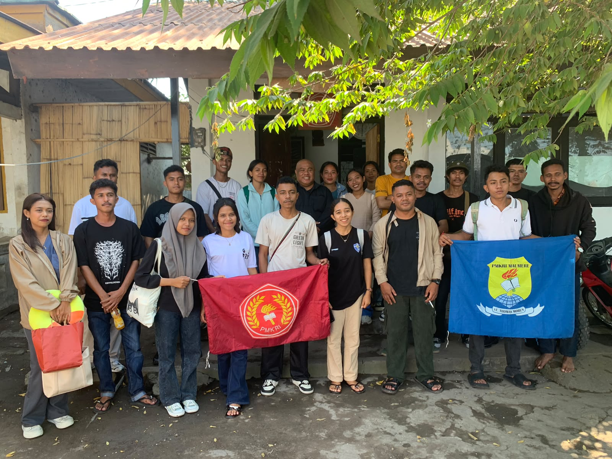

03 — Aktivitas & Pengalaman
Aktivitas &
Pengalaman

BPS Kolaborasi
Agen Statistik Unipa
Berperan dalam edukasi prosedur pengambilan data, pembuatan konten statistik, serta aktif dalam forum diskusi untuk meningkatkan literasi statistik mahasiswa.

Jurnalis
Redaksi Wacana Indonesia
Bertanggung jawab memastikan kelayakan berita sebelum tayang serta mengelola konten agar tersaji menarik, informatif, dan mudah dipahami masyarakat luas.

Delegasi PMKRI Cabang Maumere
Kongres Nasional & MPA PMKRI di Ruteng, NTT
Mewakili cabang, menyampaikan aspirasi, dan berpartisipasi dalam setiap keputusan strategis Perhimpunan

Sosial
Relawan & Kegiatan Sosial
Aktif sebagai relawan pengungsian letusan Gunung Lewotobi, penggalangan dana untuk panti asuhan, serta mengikuti life in. Membentuk kepedulian dan empati nyata.